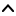

| Top |  |
GimpModuleDBGimpModuleDB — Keeps a list of GimpModule's found in a given searchpath. |
| GimpModuleDB * | gimp_module_db_new () |
| void | gimp_module_db_set_load_inhibit () |
| const gchar * | gimp_module_db_get_load_inhibit () |
| void | gimp_module_db_load () |
| void | gimp_module_db_refresh () |
GimpModuleDB *
gimp_module_db_new (gboolean verbose);
Creates a new GimpModuleDB instance. The verbose
parameter will be
passed to the created GimpModule instances using gimp_module_new().
void gimp_module_db_set_load_inhibit (GimpModuleDB *db,const gchar *load_inhibit);
Sets the load_inhibit
flag for all GimpModule's which are kept
by db
(using gimp_module_set_load_inhibit()).
db |
A GimpModuleDB. |
|
load_inhibit |
A G_SEARCHPATH_SEPARATOR delimited list of module filenames to exclude from auto-loading. |
const gchar *
gimp_module_db_get_load_inhibit (GimpModuleDB *db);
Return the G_SEARCHPATH_SEPARATOR selimited list of module filenames which are excluded from auto-loading.
void gimp_module_db_load (GimpModuleDB *db,const gchar *module_path);
Scans the directories contained in module_path
using
gimp_datafiles_read_directories() and creates a GimpModule
instance for every loadable module contained in the directories.
db |
A GimpModuleDB. |
|
module_path |
A G_SEARCHPATH_SEPARATOR delimited list of directories to load modules from. |
void gimp_module_db_refresh (GimpModuleDB *db,const gchar *module_path);
Does the same as gimp_module_db_load(), plus removes all GimpModule
instances whose modules have been deleted from disk.
Note that the GimpModule's will just be removed from the internal list and not freed as this is not possible with GTypeModule instances which actually implement types.
db |
A GimpModuleDB. |
|
module_path |
A G_SEARCHPATH_SEPARATOR delimited list of directories to load modules from. |
“add” signalvoid user_function (GimpModuleDB *gimpmoduledb, GimpModule *arg1, gpointer user_data)
Flags: Run First
“module-modified” signalvoid user_function (GimpModuleDB *gimpmoduledb, GimpModule *arg1, gpointer user_data)
Flags: Run First
“remove” signalvoid user_function (GimpModuleDB *gimpmoduledb, GimpModule *arg1, gpointer user_data)
Flags: Run First